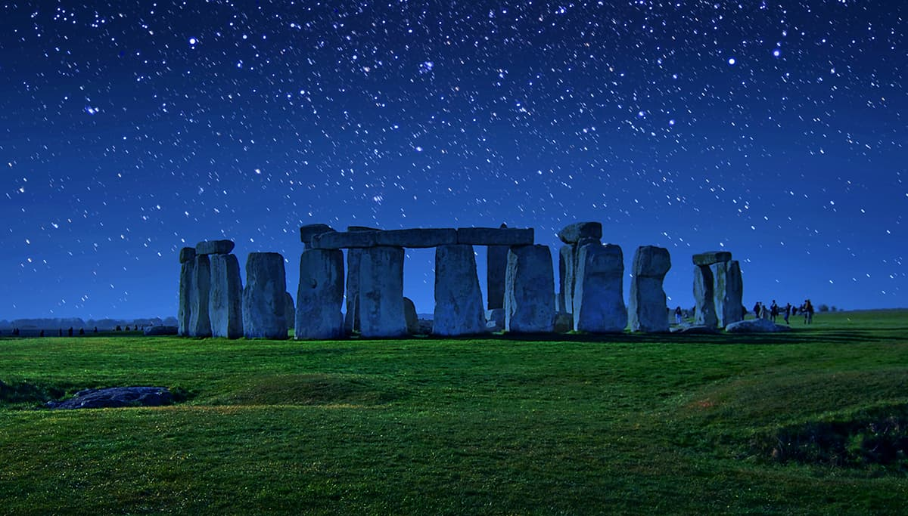

Reino Unido
O Reino Unido é uma nação composta por quatro países: Inglaterra, Escócia, País de Gales e Irlanda do Norte. A Inglaterra, local de nascimento de Shakespeare e dos Beatles, abriga a capital, Londres, um centro financeiro e cultural globalmente influente.
Culinária:
Fish And Chips
É um prato típico dos inglêses, ele consiste em um peixe frito(dizem que o melhor para usar é o bacalhau) envolvido em um polme e batatas fritas, é um prato que surgiu no século XIX e se popularizou por se um prato rápido de se fazer e ser bem acessível.

Locais a se Visitar:
Stonehenge
É um monumento pré-histórico de círculo de pedras localizado na Inglaterra, construído em várias etapas, com o principal círculo de pedras erguido por volta de 2500 a.C. Com um propósito ainda incerto.

Bandas: